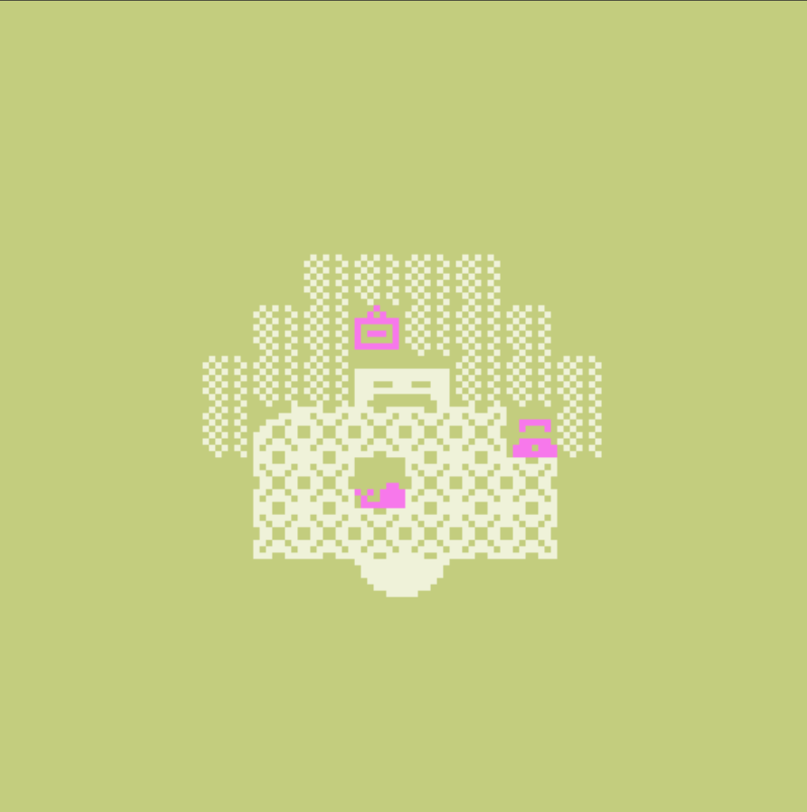
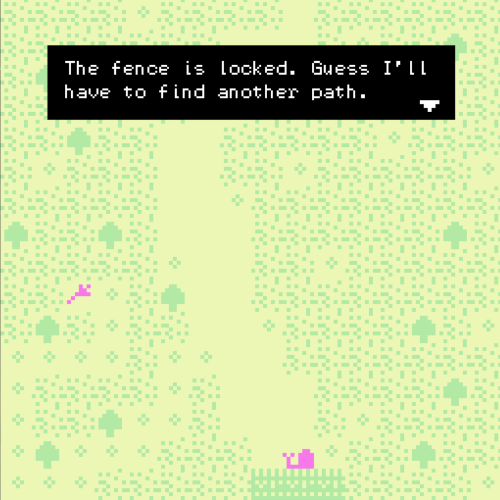
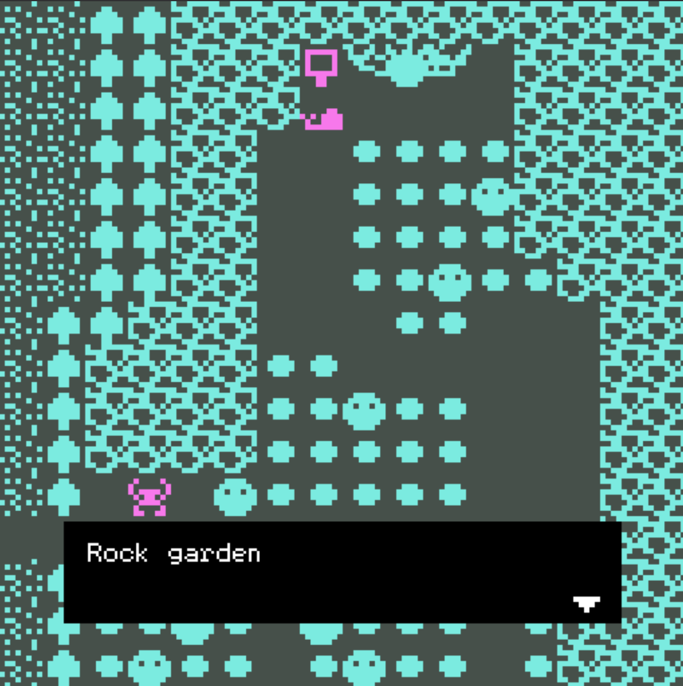

I designed this narrative Bitsy game that centers around the positive message of friendship. The player’s main goal is to find Shelee the snail’s friends in a game of hide-and-seek. The presence of every character and object is important in driving the narrative since they each have a designated purpose.


Inspired by my walks in nature, I developped characters and settings based on animals and plants. I combined space with the narrative to communicate progress. I included hubspaces (where a room is dedicated to two divergent paths and communicates possible actions), prospect spaces (e.g. rock garden that spans two rooms to give the impression of being a gargantuan space), a maze (another form of prospect space that stimulates player’s thinking), and narrow spaces (e.g. narrow bridge that creates contrast and builds up anticipation for what comes next).

